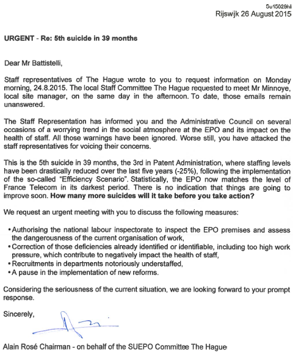
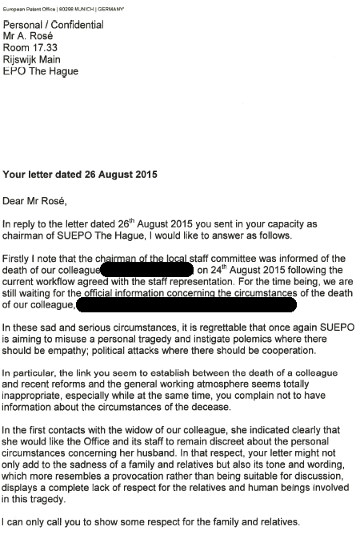
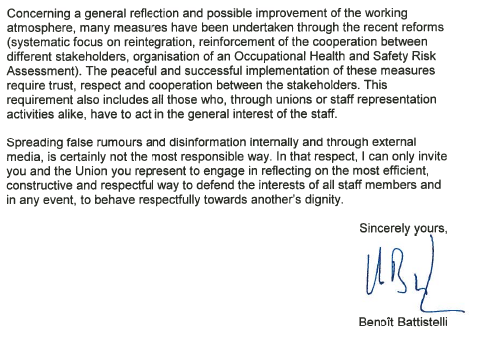
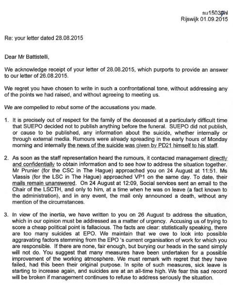
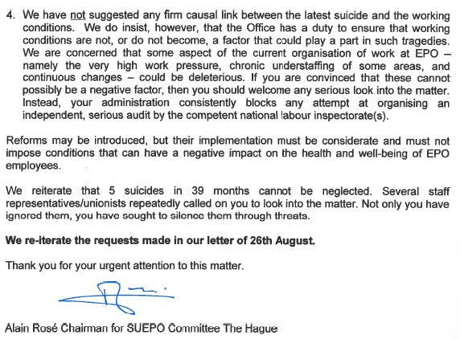
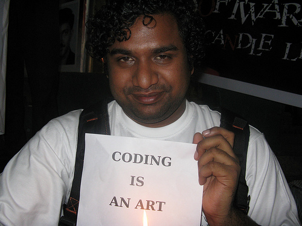

09.09.15
Posted in Europe, Patents at 11:14 am by Dr. Roy Schestowitz
Summary: The EPO’s shameless assault on staff unions reaches an all-time high (or all-time low in terms of ethical standards) as voices of legitimate concern grow louder inside the organisation, whose employees are increasingly fed up with the management’s attitude and blatant disregard for European laws
WHEN Benoît Battistelli signed the Control Risks (CRG) contract, despite CRG being a Military-industrial Complex firm, he served to seriously discredit his entire organisation. We strongly encourage all of our readers to learn about how union busting is done (it’s extremely ugly and unethical, sometimes even illegal and literally murderous) in order to better grasp what Battistelli is up to. Another suicide at the EPO became just a matter of time and the frequency of suicides recently accelerated [1, 2, 3, 4] . For Battistelli, this is war. Here is a letter sent to the Administrative Council (largely Battistelli-occupied by now). Notice the number of signatures, some from high-level employees who are brave enough to add their names, despite the known hostilities and the union-busting spirit of Battistelli, not to mention that of his right-hand man Željko Topić).
To Heads of the Delegations
of the Administrative Council
of the European Patent Organisation
Fifth suicide since 2012
Dear Sir, Dear Madam,
We regret to have to inform you that another colleague, a married man, 42 years old and father of two, committed suicide at the end of August on the last day of his holidays. If our thoughts go in the first place to his family and friends, this tragedy also compels us to
recall some other recent tragic events.
This is the fifth suicide at the EPO in 39 months, and the third one in Patent Administration (DG2). This latest suicide puts the EPO statistically on a level with the infamous France Telecom.
The EPO has a duty of care towards its staff. While the circumstances of this tragedy are still being looked into, we must nevertheless ask ourselves whether there is anything the
Office could or indeed should have done that might have prevented it. It cannot be ignored that Patent Administration is the area most affected by constant restructuring as well as swingeing staff reductions imposed by Mr Battistelli since his arrival at the EPO.
Staff representatives have repeatedly warned both the Administration and the Council that a combination of too high work demands coupled with hasty reforms and brutal management methods have generated what we consider a toxic work environment, not just in Patent Administration, but Office-wide. Not only have these warnings been ignored, but also letters sent to you by the Central Staff Committee (CSC) on the following dates remain unanswered:
- 5 December 2013 (sc13181cl),
- 16 September 2014 (sc14193cl)
- 17 April 2015 (sc15164cl)
We herein restate the content of those letters and reiterate the requests made in them. We also remark that to date the EPO continues to prevent independent inspection of the EPO premises by national authorities. Furthermore, the Administration has yet to give the
“green light” to allow staff representatives to again organise an independent staff survey by Technologia, an external body trusted by staff.
A quick glance at the attached correspondence should suffice for you to understand how unwilling the President and his close associates are to tackle these issues promptly. Meanwhile and contrary to the “lip service” paid by the Administration in referring to a “renewed social dialogue”, the reality is that the working climate within the EPO has further deteriorated.
In the light of all the above issues, we urge you to ensure that the Organisation discharges faithfully and fully its obligations towards staff.
Yours sincerely
The SUEPO Central Bureau
Joachim Michels
Chair SUEPO Central
Elizabeth Hardon
Vice-Chair SUEPO Central
Chair SUEPO Munich
Alain Rosé
Vice-Chair SUEPO Central
Chair SUEPO The Hague
Wolfgang Manntz
Vice-Chair SUEPO Central
Chair SUEPO Berlin
David Dickinson
Vice-Chair SUEPO Central
Chair SUEPO Vienna
Annex 1: Letter of Alain Rosé to Mr Battistelli, 26 August 2015
Annex 2: Answer of Mr Battistelli, 28 August 2015
Annex 3: Letter of Alain Rosé to Mr Battistelli, 1 September 2015
Benoît Battistelli and his goons From Control Risks (CRG) respond with great force, quite frankly as usual.
SUEPO published the letter addressed to the Administrative Council of the EPO the day before yesterday or the day before that (it got leaked to us). “Investigations at the EPO,” told us a source, are not subjected to scrutiny. Things must change. “Here is the latest SUEPO publication on investigations by Control Risks,” told us one person. “It is self-explanatory.”
Here is an HTML version of the original PDF [PDF], which is suitably redacted:
From: Claudio Zanghi
Sent: Friday, September 04, 2015 4:30 PM
To: ██████████
Cc: ██████ ██████@controlrisks.com); ███████@controlrisks.com
Subject: Confidential document for your attention: case C-071
Dear
With this email, I am sending you a notification of allegations of harassment raised against you.
Please also find attached information relating to the process, your rights, obligations, and the expectations towards you. Kindly read this information carefully, and let me know if you have any questions. Our reference case number for this matter is C-071; please include this in any correspondence.
You are hereby invited to meet with the Investigative Unit for an interview, to which you may be accompanied by an Office employee of your choice not connected to the matter (see attached notification § 4), on:
Thursday 10 September 2015, at 13:30 hrs. in the Munich Isar building, room 126.
The interview is scheduled to take place in your preferred official language. Kindly inform us if you wish to hold the interview in a different official language of the Office.
As indicated in the attached notification, pursuant Art. 4 of Circ. No. 341 and 342 we have to inform you of the obligation to maintain strict confidentiality on the matter, including the present communication.
Sincerely
Claudio Zanghi
Head of Investigative Unit | Dep. 0.6.1.1
European Patent Office
Bob-van-Benthem-Platz 1 | 80469 Munich | Germany
Tel. +49 (0)89 2399 1607
Mobile +49 151 54404184
czanghi@epo.org
www.epo.org
Recall what CRG has been doing so far. We wrote about some of their abusive behaviour in articles such as:
EPO staff needs to support this union, which has been sacrificing personal calm and definitely work security for the betterment of working conditions and the welfare of fellow workers. Look how these people are treated merely for combating corruption and trying to uphold the law. █
Permalink
 Send this to a friend
Send this to a friend
Posted in Europe, Patents at 5:21 am by Dr. Roy Schestowitz
EPO has gone militant
Summary: Several independent reports of ‘BRAIN DRAIN at the EPO’, including so-called ‘interrogations’ of staff which make it no wonder that some people die
A TRULY TOXIC work environment is what the European Patent Office (EPO) became quite a long time ago. Employees have to cope with terrible, merciless rulers and give up many of their basic rights. Sick leave is the least of the problems, though media under the influence of EPO (like “media partners” [1, 2]) helps the management paint the situation and frame staff demands like this, essentially portraying the staff as arrogant and spoiled (the same media strategy the City of London used when Tube workers went on strike several times this past summer). The EPO’s management simply breaks some fundamental laws, ignores court rulings, and even bullies staff. People don’t want to work there and it’s easy to see why. Some want change, but some have given up. Some decide to go on strike, but some decide to just walk out the door for good. To use the words of one source of ours, the EPO Investigation Unit “illustrates the work sphere.” It’s like the Stasi, maybe worse, and it extends well beyond Munich (it is Office-wide across Europe). The Investigation Unit is international and it is aided by spies who even work outside of Europe. Good use of taxpayers’ money clearly it is not.
“The Investigation Unit is international and it is aided by spies who even work outside of Europe. Good use of taxpayers’ money clearly it is not.”A toxic work environment — sometimes literally toxic — is something that I last discussed with my wife yesterday as she recalled her time working in Taiwan. After confiscating all workers’ passports (having forcibly, as per the oppressive rules, visited the police where everyone had to register) they proceeded to taking fingerprints, faeces samples etc. (people treated like cattle and reduced to mere objects, assets, resources). They were then exposed to cancer-causing X-ray (more than once) and were led to machines that not only ruined their vision but also their general health (because of exposure to hazardous chemicals). Moreover, they were pressured to work very fast in order to meet quotas and not only underperforming staff (based on very demanding standards) got laid off but also ones who had charisma and merely suggested that meals can be shared among colleagues; not only one such worker got fired (and ended up in tears) perhaps because she was deemed a potentially unionising force and thus a ‘threat’ but also her friend got fired, merely for association (or maybe fear of retaliation by communication after her friend got unjustly fired). Union-busting may be very prevalent in places like Taiwan and China, but it is also alive and well in Europe, not just famously in the US (Walmart for instance).
The EPO’s management ruined what was supposed to be decent, at least on paper. It has become a nasty organisation that targets unionists and their friends. It is therefore no wonder that the management lost legitimacy and there is now “BRAIN DRAIN at the EPO,” one source has told us, expanding that “the EPO suffers from a massive BRAIN DRAIN. Many staff members (examiners, formality offices) leave the hell, if they can, by early retirement (between 50 and 60, you still can early retire, with certain amount of deductions), “normal” retirement, or they resign. I just received information about figures, but as long as I don’t have a proof, this info is in a kind of limbo.”
“The EPO is so unbelievably corrupt, but there are things people know but cannot say (at least not yet).”“Perhaps you receive such information from other sources,” said the source, “they are not lying, but simply telling the truth.” As pointed out in recent letters to Benoît Battistelli, this has become common knowledge now and we have been hearing it from several sources (independently). “I expect the office failing in the future,” told us a source, adding: “Who is responsible? Benoît Battistelli & clique damaged the EPO and patent system.”
For the time being, this is information that we can publish with the caveats, at least until we have some harder figures. We know about the fifth suicide, but what about people who make their way out of the EPO alive?
“Better wait until “hard” figures are published,” a source told us about this “BRAIN DRAIN” at the EPO, “or leaking.” It “may be needed to wait until the next year when the official yearly report for 2015 is published, with the staff figures. Personally I know of dozens of colleagues who retired, early retired or resigned.”
We will follow up with publication if someone can send us additional details and preferably hard proof, aside from many anecdotes. According to suepo.org’s silence as of late, the atmosphere of intimidation has had a chilling effect on people who may want to come forth with information (members of the union and outsiders). We have seen cases of hesitance to speak out, even when information is available that can seriously undermine the rogue elements at the organisation.
The EPO is so unbelievably corrupt, but there are things people know but cannot say (at least not yet). It’s almost as though fascist regimes are back with a vengeance even in Europe, but as long as they are compartmentalised, people don’t quite know about them. The EPO is a good example of a worrisome trend where an employer or a government treats staff and citizens like enemies, acting accordingly.
To better understand why there are many EPO staff suicides one needs to know what happens behind closed doors, including revolving doors. There are people who move from war in Afghanistan to the EPO and from spy agencies to the EPO, where ‘interrogation’ techniques are now being used on staff. If only more people knew the full extent of what the EPO does, there would possibly be a mass exodus.
“We kindly ask anyone with relevant information to consider contacting us.”Calls for the arrest of high-level EPO officials aren’t new, but apparently these thugs are too well-connected to face justice. To tackle the abuses of the EPO we don’t need MEPs to speak out; we need special units of German police and we need immediate action that is based on the hard facts. What the public really needs to know about the EPO is the stuff that EPO threatens people who speak out about.
Based on our research, the EPO now employs (not contracts) staff from CRG (Control Risks Group, or ‘British Blackwater’) and we know now who asked Battistelli to sign a contract with CRG, showing disturbing intersection between EPO management and the Military-industrial Complex. For those who forgot how CRG relates to the EPO, recall the following older articles:
We kindly ask anyone with relevant information to consider contacting us. We have never let down a source (in nearly a decade of operation) because we are prudent, discreet, and have strict policy on data security (my laptop, for instance, never leaves the house and messages are encrypted). If enough people speak out, things will change. European politicians access our article and occasionally interact with us because they are growingly disturbed by what is happening at the EPO, but they can only go as far as the information available to them allows. █
Permalink
Send this to a friend
09.08.15
Posted in Europe, Patents at 10:19 pm by Dr. Roy Schestowitz
Summary: A letter addressed to Benoît Battistelli about staff suicides and his controversial response to it
EARLIER this year we showed and specifically highlighted French- and German-speaking articles [1, 2, 3, 4] where Battistelli, ringleader of the scandalous EPO, expressed outrage not over suicides themselves but over people who merely ‘dared’ to point out the correlation between suicides and the EPO’s poor management. The appalling treatment of staff will be the subject of numerous posts this month. It’s a lot worse than people have come to imagine. It’s almost definitely beyond what’s permitted by law (European law), but then again, if the EPO hires thugs and felons to join even the highest of levels in the organisation, this probably is perfectly in line with the current standards.
In the following series of letters, circulated among several people, Battistelli is shown yet again fuming at staff representatives and even threatening them (more than implicitly) because of their concern for colleagues. We have deleted names and other identifying parts in respect to the privacy of the deceased person and we can safely present it below for future reference.





The above does not need any further comment (especially as the last letter sheds light on what was wrong with Battistelli’s reply), except a reminder that this is not the first time that Battistelli acts in such a fashion. This is systematic and it is consistent with Battistelli’s past attitude. It’s not some hot-headed tantrum. This alone helps demonstrate how toxic EPO management has become, making life very unpleasant for highly-skilled employees, many of whom are leaving (more on that we shall cover separately). █
Permalink
Send this to a friend
Posted in Asia, Free/Libre Software, Patents at 6:31 am by Dr. Roy Schestowitz
From the Campaign for Document Freedom
Summary: India’s move towards software patents already encounters opposition from the Free Software Movement of India (FSMI) and China’s new obsession with software patents is addressed
SOFTWARE patents are truly a menace. Virtually no software developers would ever defend these, except maybe their ‘pioneer’. These are hurting even proprietary software companies, not just Free software developers. As the Microsoft booster Tim Anderson put it yesterday, “[l]egal woes (and cracked licence keys) cause dev favourites to throw in the towel”. He wrote about “Iron Speed, a firm which provided a rapid application development tool for creating .NET apps [which] is shuttering itself thanks to “litigation with a patent troll”, according to a letter sent to customers by co-founder and chairman Alan Fisher.”
The fight against software patents ought to be a common cause among proprietary and Free/Open Source software developers. Conglomerates such as Microsoft and IBM, which are not run by developers, want software patents in order to merely cement their monopolies, which they acquired only because of lack of software patents (back when they were small). Companies that focus on software can only succeed and thrive in the absence of monopolies on algorithms.
“The fight against software patents ought to be a common cause among proprietary and Free/Open Source software developers.”India’s policy on algorithm monopolies has been sound for a number of years, especially given the large number of software developers in India (both proprietary and Free/Open Source software developers). We were therefore rather stunned to learn that India is making a terrible, suicidal move. The Indian Patent Office sells out, causing huge issues for everyone, based on patent-centric sites. There is a panic among everyone except patent lawyers. Some rightly ask: “Will It Stifle Innovation in the IT Industry?”
Of course, it has been repeatedly shown in practice and in theory. India is making even more impact in the media (even international networks like Reuters [1, 2] by giving Pfizer the finger again. As PTI put it, “India rejects Pfizer’s patent application for arthritis drug”. Pfizer just wants another monopoly and India, realising the ethical impact, denies/declines. Why can’t the Indian Patent Office realise that patents on software too are unethical, irrational, and damaging to India? Who is this patent office working for? As one site put it: “The Indian Patent Office (IPO) has addressed limitations on patents for computer-related inventions to clarify the Patents (Amendment) Act 2002.”
It didn’t just address limitations; the word “limitations” has a negative connotation, as if patent maximalism is a good thing.
“Free Software activists against changes to patent norms” is the headline of this new article in English, which shows that the Free software types are already responding to this crisis. To quote the opening paragraph: “The Free Software Movement of India (FSMI) has alleged that the new Guidelines for Examination of Computer Related Inventions are illogical. It argues that they violate the spirit and law contained in the amended Patents Act of 1970 and could pose a grave threat to innovation in our country.”
There are meanwhile reports also from China, the other Asian technology giant. “Last year,” said this article, “for the fourth year running, China topped the patent league with 928,000 patent applications compared to 578,800 patents filed in the USA.”
This is not because of increased innovation but due to patent maximalism. As this new article indicates, software patents are becoming widespread in China (we wrote about this trend before). To quote the lawyers’ site:
Patenting computer software inventions makes sense for the Chinese e-commerce industry for three reasons. First, the Chinese government wants more businesses to patent their technological innovations. This policy is supported at the national level and the central government pays for inventors to apply for patents. Second, e-commerce is very important in China. One quarter of all consumer purchases in China are done on-line. And that number is unlikely to get smaller. Third, today’s Chinese consumers have many options and they have grown to expect quality products, quick service and reasonable prices.
For most active businesses, the third reason is the key. Finding an edge in meeting those consumer expectations has made for a fiercely competitive marketplace. Protecting process innovations that involve software improvements is, as it is everywhere, problematic. How are computer software inventions protected in China as a matter of law?
China would not gain any advantage by allowing patents on software. It would just be wasting time and other resources composing documents in Mandarin. A lot of these so-called ‘innovations’ are not innovative at all; they can be found in existing patents (maybe in other languages) and refer to ideas that got implemented a very long time ago. These patents are good for nothing, except maybe serve as trophies (although the higher the number of such ‘trophies’, the less impressive each becomes).
Business hawks in the US are not resting [1, 2]. They still lobby against patent reform in the US, pretending it would “hurt innovation”, “weaken patent laws”, and the usual nonsense about hurting businesses, which is exactly what patent law does at the moment (hence the need for reform). To quote the latter example, here is why the hawks have just resumed this lobbying (it’s about timing): “Toward the end of each summer lawmakers travel back to their home states and districts for the August recess. This time away from our nation’s capital allows elected officials to reconnect with constituents and hear which issues matter most to folks back home.”
US officials will hopefully work towards a real reform, not the diluted one which had been tabled before they went on holiday.
It is rather worrisome to see software patents spreading to large parts of the global economy (India, China, and even Europe if the corrupt EPO management gets its way) while the US itself, the original source of these patents, is coming to grips with the harms of these patents and cutting down accordingly. █
Permalink
Send this to a friend
09.07.15
Posted in Asia, Patents at 4:33 am by Dr. Roy Schestowitz
Software patents comeback shows that protests in India are needed again

Summary: The disease which is software patents keeps trying to spread while its home country, the United States, is gradually ending software patents
THIS WEEK begins with some bad news. IAM, despite its biases, was right to suggest that patent proponents that push for software patents in India are trying, with some success in fact, to gain legitimacy and change the law.
“Even the highest court in the US ruled against these, by extension.”Based on today’s new article from the corporate media in India: “The Indian Patent Office’s recent guidelines, declaring that software and business methods are patentable in India, has set off alarm bells across the software product industry.
“The patent office for the first time made a clear interpretation of the Patents (Amendment) Act, 2002 to mean that if a software has novelty, is inventive or tangible, and has proper technical effect or industrial application, it can be patented. The guidelines serve as a reference for officers in granting patents. Software product industry experts are against modifying the law to make computer programs easily patentable, arguing that innovation in the area is often incremental and programs are built on top of other programs.”
This is disturbing as it seemingly came out of nowhere. It’s due to lobbying that never stops, for instance in New Zealand this summer [1, 2, 3].
India’s patents and policies on granting any is not as lenient as in Western nations and in fact earlier this morning the same paper (as above) wrote: “The Indian Patent Office has denied American drugmaker Pfizer patents for certain isomers and stereoisomers of tofacitinib, a product it markets globally as Xeljanz for the treatment of rheumatoid arthritis, in the latest example of a foreign company finding it difficult to patent incremental innovations in the country.”
If India can (famously) grasp the evils on patents like these, why can’t it see that software patents are inadequate? Even the highest court in the US ruled against these, by extension. It makes absolutely no sense for patents like these to spread from the US elsewhere when the US itself is now questioning (and invalidating en masse) software patents.
There is currently some European analysis of Apple‘s software patents in Europe (EPO-steered policies made these possible) and it’s noted that:
It is only in the U.S. — in California, Apple’s home state – that Apple has been able to score wins when it comes to the slide-to-unlock patent. In any case, the scope of the patent is quite limited (it only covers the slide-to-unlock where an image is moved across the screen) and can be worked around (it has been implemented into a multitude of Android devices). It’s hard to ignore the suggestion that Apple made this feature “famous” and most likely forced other smartphone makers to implement distinguishable slide-to-unlock mechanisms. Now people know instinctively what to do to unlock a phone but, at the end of the day, in this case it was not considered that their innovative capabilities were a sufficient reason to limit consumer choice.
Well, on the basis of it being a software patent, this patent ought to have been immediately thrown out. But after Brimelow’s “as such” nonsense (notorious loophole) it often seems as though Europe only pretends to be banning software patents. There are further plans to further legitimise software patents in Europe.
India, New Zealand, and Europe should all fight back against the software patents lobby and make it explicitly clear (without exceptions) that software patents are forbidden. Failing to do this would cause enormous damage to these economies, and moreover welcome patent trolls. █
Permalink
Send this to a friend
09.04.15
Posted in Apple, Patents, Samsung at 6:43 am by Dr. Roy Schestowitz
Photo source: Intellectual Ventures
Summary: News collated which pertains to software patents, especially those which affect Free/libre software
TODAY’S series of links is divided based on themes, starting with what we deem most important.
Apple’s Attacks on Free Software
Joe Mullin is flabbergasted by Apple’s vicious assault on the Linux-powered platform that reduced the ‘i’ empire to rubble, with at most 18% market share (depending on the source and the geography).
“All that Apple does is dissemination of DRM, maximisation of (weaponised) patents, and exploitation of public ignorance/apathy to ‘sell’ (actually rent) proprietary software on overzealously locked-down hardware.”Android rose to unbeatable levels of dominance despite Apple’s assault (remember that Apple started it 5 years ago) and in one legal case alone there are now “3,200 documents [...] not including exhibits.” Imagine the cost of legal defence here. Apple and Samsung are still fighting in court and “Koh’s recent orders suggest she is fed up with the intense litigation by both parties,” Mullin notes. “The case docket for the first of two Apple v. Samsung lawsuits now has more than 3,200 documents in it, not including exhibits. Last week, Koh issued an order prohibiting the parties from making any further additions without permission.”
This is, at the very least, deterrence. More importantly, it’s Apple greed (it wants billions of dollars from Samsung). Apple is just hoping that companies with pockets less deep than Samsung’s will simply give up and pay Apple for profits made through distribution of Android (Free software). This is clearly an attack on Free software, so anyone still insisting that Apple likes “Open Source” is about as delusional as people who deem ‘i’ products superior and worthy of the high price tags.
Several years ago we openly and unambiguously called for a boycott of everything “Apple”. The company is malicious and it is dangerous to the future of Free software. All that Apple does is dissemination of DRM, maximisation of (weaponised) patents, and exploitation of public ignorance/apathy to ‘sell’ (actually rent) proprietary software on overzealously locked-down hardware.
Rothschild Connected Devices ‘Innovations’
Joe Mullin, covering and citing the original rant from the EFF, expands on Rothschild Connected Devices Innovations, which is essentially a patent troll. He provides some details on what Leigh Rothschild, whom the world’s biggest patent troll (Intellectual Ventures, Microsoft-connected) glamourises, has been up to:
Patent-holding company Rothschild Connected Devices Innovations (RCDI) owns US Patent No. 8,788,090, which was granted in 2014 and describes a system where a “remote server” “transmits” a “product preference” via a “communication module.” Using those broad claims, RCDI has sued more than 20 companies for making things that connect to the Internet. The company sued ADT (PDF) over its Pulse product that allows for things like adjusting a thermostat.
The patent relates to an application filed back in 2006 that essentially describes an Internet drink mixer. A consumer can customize products by connecting to a server on “the global computer network, e.g., the Internet,” which can then “provide product preferences of a user to a product or a mixing device, e.g., a product or beverage dispenser.”
This is an example not just of patent trolling but also software patents, which are the weapon favoured among patent trolls. If the latter can be eliminated, much of the former too will vanish (go bankrupt). This is why we emphasise the need to combat software patents (scope), not just “trolls”, however one defines them (definitions tend to vary somewhat as some very large companies act indistinguishably from classic patent trolls or patent sharks).
Changes Afoot
There are more new signs of the US patent system tightening. Yesterday for example Foley & Lardner LLP published an analysis of another criterion (not “abstract”) by which patents can be squashed in US courts, even the notorious Court of Appeals for the Federal Circuit (CAFC). To quote the analysis: “As noted in the Federal Circuit decision, Dow Chemical Company asserted selected claims of U.S. Patent No. 5,847,053 and U.S. Patent No. 6,111,023 against NOVA Chemicals Corporation (Canada) and NOVA Chemicals Inc. (Delaware). A jury found the asserted claims to be infringed and not invalid, and the Federal Circuit affirmed, holding, among other things, “that the asserted claims were not indefinite.” The district court then conducted a bench trial for a supplemental damages period through the expiration date of both patents, granted $30M in supplemental damages in the form of lost profits and reasonable royalties, and denied Dow’s request for enhanced damages. NOVA appealed, and Dow cross-appealed.”
Earlier this year we wrote about the Nautilus case. This too is relevant here. “Applying the Nautilus standard,” says Foley & Lardner LLP, “the Federal Circuit held that existence of multiple methods that could lead to different results and the absence of guidance in the patent or prosecution history as to which method should be used rendered the claims indefinite because they “fail to inform, with reasonable certainty, those skilled in the art about the scope of the invention.” The court therefore reversed the $30M supplemental damages award.”
This ought to discourage litigation, filing of new patent applications that are similar in nature to the above, and generally feed back (like in a loop) into the US patent system so as to modify examination guidelines, in very much the same way that Alice has done since last year. See this new article titled “After Alice: A Feedback Loop of Software Patent Invalidity”. The article comes from the pro-patents media (whose audience is patent lawyers) and it’s summarised as follows: “Ever since a major patent decision handed down by the U.S. Supreme Court last year, patents have seemed to be invalidated right and left. But is that a result of the decision itself, or because of the feedback loop caused by the process by which patents are challenged?”
They are trying to dismiss the legitimacy of the decisions by casting them as an “echo chamber” of sorts. Well, that’s what one might expect from the patent profiteers, even thought some patent lawyers’ blogs already acknowledge that software patents may be on their death throes.
IP Kat, a blog run by patent lawyers (and other monopolies like copyrights, trademarks, etc.), is still openly concerned about voices of reason, or published opinions from people who don’t profit from this corrupt system of protectionism by patent monopolies. Watch this latest dismissal of The Economist‘s pair of articles.
“No,” insist sthe patents proponent, “what these articles are ultimately intended for is to try and set the narrative by which the patent system is discussed. To this end, economics is merely a hand-maiden. In so doing, The Economist joins a long tradition. We have seen the struggle to control the patent narrative played out several times in the recent past.”
OK, so the lawyers are upset at an opposing (not dissenting) view and insist that The Economist is basically trolling (in the Internet troll sense of the word). “No,” continue this particular lawyer (second in this blog this week to write about The Economist‘s articles from one month ago), “this Kat is not an IP Luddite. The patent system and the laws underlying it can certainly be improved. But this is not what the two pieces in The Economist are about.”
It was perfectly clear what The Economist meant to say. Rather than tip-toeing and making decorative, minor changes to a broken system (like all of these proposed ‘reforms’ we keep hearing about) the writers/editors at The Economist wish to just scrap the entire lot, potentially starting from scratch (if at all). Seeing the patent lawyers squirm over this very idea is hardly surprising. Their want their share. They want to tax everything, even if nobody needs them at all. █
“We cannot hope to own it all, so instead we should try to create the largest possible market and insert ourselves as a small tax on that market.”
–Nathan Myhrvold, Microsoft at the time (now a patent troll)
Permalink
Send this to a friend
09.03.15
Posted in GNU/Linux, Google, Microsoft, Patents at 2:41 pm by Dr. Roy Schestowitz
Hopping to the competitor’s side of the fence/gate, just like in Troy
Summary: Vista 10 adoption is already plateauing (at very low levels considering the zero-cost ‘upgrade’) and Microsoft is trying to assert or exploit (patent) monopolies where adoption and market growth are extremely high (Free software)
Barely anybody is using Microsoft’s ‘new’ (rebranded) browser, according to this article which cites an IDG report, which in turn uses Microsoft-friendly data sources such as Net Applications. That’s despite Microsoft’s dirty and anti-competitive tricks regarding the default Web browser (Microsoft overriding users’ preferences) [1, 2] in Vista 10. Microsoft Emil, who is writing lots of propaganda pieces for Vista 10 over at VentureBeat these days, is trying to give a terribly false impression by passing the gross distortion/illusion that Vista 10 now has majority market share (extreme cherry-picking) while even the most Microsoft-friendly surveys put its market share at under 5%, instantaneousness debunking Microsoft’s unverified claims of 75 million Vista 10 ‘users’ (however Microsoft defines these). Matt Weinberger, in the mean time, comes out with another promotional Microsoft piece advocating a new Microsoft monopoly (because the operating system monopoly has been lost to Android, GNU/Linux, and so on). One Microsoft apologist (very Windows-centric) is now trash-talking GNU/Linux and devaluing privacy in an effort to convince people to adopt Vista 10 and avoid GNU/Linux. How much more blatant can it get? Microsoft doesn’t “love Linux”, it just hates it. The Microsoft boosters truly fear Free software and they’re pretty bad at hiding it.
“Expect Microsoft to continue wielding patents against GNU/Linux and Android (it’s still happening), especially now that Windows is in a state of crisis.”Android is currently being besieged by Microsoft. A site that is affiliated with Microsoft’s MSN (and by its own admission “owns shares of Microsoft”) is trying to promote Microsoft inside Android, a former Microsoft lackey (see her career history, before she scrubbed it off her profile) is promoting Skype on Android, and Ketan Pratap says “Microsoft’s Push Into Google’s Android Is Good News for Users”. That’s almost as foolish or terrible as saying that the Trojan horse was good for Troy.
Microsoft is viciously attacking Google, Android, and ChromeOS using patents. Make no mistake about it, there is extensive evidence of that and not even Microsoft would deny it when asked. When Microsoft approaches Android et al. it’s part of an effort to weaken competitors, not contribute or complement them.
Patents are an ugly business. They’re offensive, not defensive, but tabloids like Gizmodo make gossip out of Google’s patent search, adding a ‘sexy’ angle to it. Google is no fan of patents and it tries combating them using prior art searches.
There is a practice we’ve been covering here in relation to patent attacks to Android. Tim Sparapani calls this “Attack of the Patent Privateers”, alluding to a system of cartels that collude against competitors (assuring one thrives with protectionism, not innovation). As Sparapani puts is, companies like Apple or Microsoft “are becoming more clever about using – or misusing, depending on your perspective – the patent system to extract funds from competitors or thwart others’ growth. This harms America’s best companies and most promising startups.
“One example of this growth is the emergence of so-called patent privateering, which contributes to an ever-greater amount of frivolous or abusive patent litigation. Privateering is a pleasant euphemism for empowering a pirate to attack your competitors for profit. Patent privateering occurs when a company lends or sells a portion of its patents to another litigious company to sue alleged patent infringers who are all too often the competitors of the original patent recipient company that was under the impression it had licensed the entire portfolio.”
That’s what Microsoft is doing to Android and Google, using Nokia‘s patents in MOSAID/Conversant‘s hands, to give just one example. Microsoft even does this more directly with Vringo. Sparapani uses the word “pirate”, not “troll”, to refer to the types of goons whom Microsoft empowers to attack competitors.
Patents are thankfully collapsing with developments such as the Alice determination. Patents on software lose their value, as do their profiteers, based on this latest analysis of the Marathon Patent Group, which (as the name implies), is not a producing company. This is basically nothing but a bunch of goons for hire — people who will use patents to attack by proxy (hence retaliatory litigation becomes an impossibility). To quote the latest on this:
According to Zacks, “Marathon Patent Group Inc. is a patent and patent rights acquisition and licensing company. The Company acquires patents from a wide-range of patent holders from individual inventors to Fortune 500 companies. It serves its clients through two complementary business units: IP Services and IP Licensing and Enforcement business. Marathon Patent Group, Inc. is based in Alexandria, Virginia. “
Expect Microsoft to continue wielding patents against GNU/Linux and Android (it's still happening), especially now that Windows is in a state of crisis. Microsoft will do this not only directly (blackmail using patents) but also indirectly, using entities like the one above (we wrote about several of them before).
Microsoft does not want peace, it wants domination. As long as this remains the case, peace will be reached with Microsoft only when Microsoft is practically dead. █
Permalink
Send this to a friend
09.02.15
Posted in Patents at 1:08 pm by Dr. Roy Schestowitz
Yet another “over the Internet” patent gets flagged
Summary: Another example of patent trolls and software patents as gatekeepers and parasites, denying access to very trivial ideas or implementations
“Stupid Patent Of The Month” this month was mentioned by the EFF on the last day of August, giving us another glimpse at “over the Internet” patents — so-called ‘innovations’ that basically involve just connecting an existing thing to the Internet. It’s a sham and an embarrassment to the USPTO. Rothschild Connected Devices Innovations is just a litigation apparatus, which makes it a classic patent troll, not just holder of an ugly patent.
The EFF’s rant (composed by Daniel Nazer) was reprinted in TechDirt, as usual, stating: “Imagine if the inventor of the Segway claimed to own “any thing that moves in response to human commands.” Or if the inventor of the telegraph applied for a patent covering any use of electric current for communication. Absurdly overbroad claims like these would not be allowed, right? Unfortunately, the Patent Office does not do a good job of policing overly broad claims. August’s Stupid Patent of the Month, U.S. Patent No. 8,788,090, is a stark example of how these claims promote patent trolling.
“A patent troll called Rothschild Connected Devices Innovations, LLC (“RCDI”) owns a family of patents on a system of customizing products. Each of these patents stems from the same 2006 application. The idea is simple: connect some kind of product mixer to the Internet and allow users to make custom orders. The application suggests using the system to make beverages or shampoo.”
This is basically a software patent and it ought to be thrown out along with many other patents that are equally ridiculous. Watch Apple‘s latest ludicrous patent to have made headlines. Putting smoke detection “over the Internet” or “on a phone” is now deemed patentable too? Were the patent examiners drunk?
“The problem is not just various particular companies but the system itself. Until or unless it correct itself this abuse will carry on.”“Patents need to be questioned,” wrote IP Kat today, “questioning whether we have that balance right.” Alluding to the recent articles from The Economist (almost a month later), the author “notes the magazine’s support for the abolition of the UK patent system in the 19th century. The Economist is not immune to flip-flopping (e.g. flip-flops on African economies). TechDirt finds flip-flops on patents in the last five years. In 2015, The Economist is arguing in favour of patent policy reform with higher thresholds for patentability and shorter terms in what they call a “rough-and-ready” system.”
It is clear that the aforementioned RCDI patent is not just some rotten apple. Many other patents are equally ridiculous if not even more ridiculous. The problem is not just various particular companies but the system itself. Until or unless it correct itself this abuse will carry on. █
Permalink
Send this to a friend
« Previous Page — « Previous entries « Previous Page · Next Page » Next entries » — Next Page »


 Content is available under CC-BY-SA
Content is available under CC-BY-SA